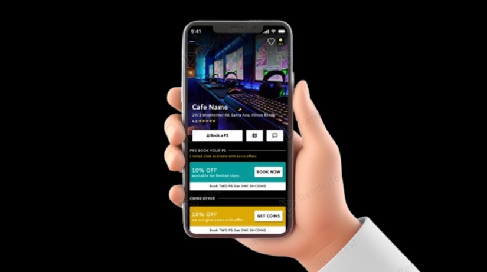
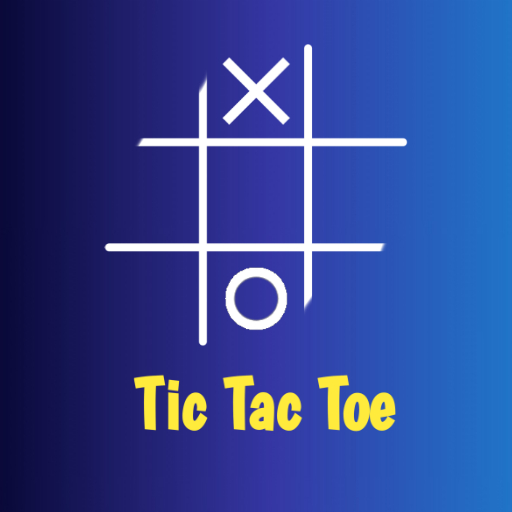
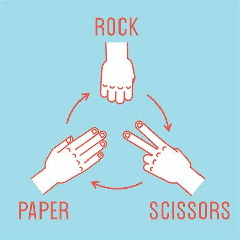

I am a dedicated web developer and UI/UX designer with a B.Tech in Computer Science Engineering. I excel in crafting seamless, user-friendly web applications that combine robust functionality with striking design. My aim is to enhance user experiences and drive engagement through innovative, user-centric solutions. I've worked on React JS in web development. My knowledge of creating User-Interface/User-Experience designs on Figma is also somewhat extensive, and it's been a great way for me to broaden my horizons about front-end development.
about me
Name: Chandrika Nikhade
From: Indore (M.P.)
Qualification: B.Tech in Computer Science
Post: UI/UX Designer and Web developer
Language: English, Hindi, Marathi
Looking for opportunities to gain quality experience.
6
Projects completed
Education
2017-18
Shri Cloth Market Vaishnav Bal Mandir Indore (M.P.)
CLass 10th
2019-20
Shri Cloth Market Vaishnav Bal Mandir Indore (M.P.)
I have created a wireframe prototype Using Figma that streamlines the process of booking a doctor's
appointment through an application. With this cutting-edge design, you can book your medical
appointments with ease and efficiency. By taking control of your health and booking an
appointment with confidence, knowing that this user-friendly interface will make the process as
smooth as possible. This project has been an exceptional opportunity for me to enhance my design thinking skills and gain invaluable experience.

Cafe Booking Design Idea
Designed a high-fidelity Screens for booking an cafe for playing games using Figma, focusing on user interface and experience. Created detailed wireframes, simulating core functionalities such as recommendation, favourite , and search with single cafe detail screen. Conducted user testing to refine the design and enhance usability.
NewsMonkey News Website -
In this project I used my HTML, CSS, JavaScript,& ReactJs skills. In this I tried to make a basic news application that updates you regularly with fresh news globally. While doing this project I learned a lot of new things like using API also learnt to use props, promises and callback functions.

Tic Tac Toe Game -
Developed an interactive Tic Tac Toe game from scratch using HTML, CSS, and JavaScript. Implemented game logic for player turns, win conditions, and game reset functionality. Focused on creating a responsive and engaging user interface with a clean, modern design. Ensured cross-browser compatibility and optimized performance. Added visual indicators for player moves and end-game states to enhance the user experience.

Rock Paper Scissors Game -
Created an interactive Rock Paper Scissors game using HTML, CSS, and JavaScript. Developed the game logic to handle player choices, computer choices, and determining the winner. Designed a responsive and user-friendly interface with intuitive visual cues and animations. Ensured the game runs smoothly across different browsers and devices. Incorporated a scoring system and reset functionality to enhance replayability and user engagement.